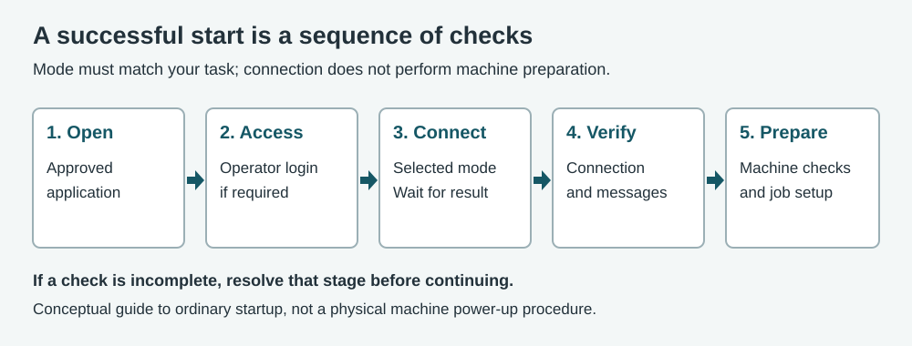

RADONIX · ROUTERXYZAC+TC · CHAPTER 3
Operator Manual · English · 8 October 2026
Startup, Login, Connection and Shutdown
Understand what happens between opening the application and preparing the machine for work. Learn how to recognize a successful connection, deal with an incomplete start and close the application correctly.
Expanded draft for review. Written for the machine operator. Physical power-up and power-down follow the instructions for the installed machine.
3.1 Understand the stages of starting work
Starting the operator application is only one part of starting work. The computer must open the correct application, the application must grant the required operator access, and the controller connection must become available in the intended operating mode. Machine preparation and job preparation then follow. Keeping these stages separate makes startup much easier to understand.
The application is the window you use to enter commands and read information. The controller is the system that carries out machine control. A visible window does not prove that the controller is connected, just as opening a telephone's contact list does not prove that a call has connected. You must look for the result of the connection, not merely the presence of the window.
| Question | What a successful result means | What it does not mean |
|---|---|---|
| Has the application opened? | The operator window is available. | The machine is connected or ready to move. |
| Has operator access been accepted? | The current application session permits operator interaction, subject to other conditions. | Every operation is available or engineering changes are authorized. |
| Is the intended connection established? | The controller is available in the intended mode and the required communication is operational. | Homing, tool checks or workpiece setup are complete. |
| Is the machine prepared for the next action? | The checks for that particular action have been completed. | Every later action is automatically approved. |
In the ordinary application startup, the operator-access check comes before the automatic connection request. If an operator password has been configured, a dialog asks for it. If no operator password has been configured, that access step can pass without a dialog. The application then requests connection when operator access is available. Connection takes place in the selected operating mode.
You may also see an informational notice when the selected mode is Simulation. Read it rather than dismissing it by habit. A notice about mode and a message about connection are different kinds of information: one concerns what sort of operation is selected, while the other concerns whether the connection succeeded.
This chapter ends at an orderly application shutdown. It does not ask you to home an axis or start a cutting job. Use Chapter 2 for the pre-start and stopping principles, and the later operating chapters for the machine actions themselves.
3.2 Open the correct application and recognize the first screen
Before opening the software for real machine operation, complete the relevant start-of-shift preparation described in Chapter 2 and the physical startup instructions supplied with your machine. This manual cannot specify the order of cabinet switches, compressed-air supplies or other installed services: those belong to the machine's own instructions.
Use the RouterXYZAC+TC shortcut or application location provided for this installation. A computer may contain copies used for training, maintenance or an earlier setup. The fact that a window has the expected appearance does not establish that you opened the approved installation. If more than one shortcut exists and their purposes are unclear, ask which one belongs to this machine.
- Check that the machine has been handed over for your use.
Read any maintenance or handover information. Opening the software must not become an accidental request to resume somebody else's unfinished work.
- Open the approved RouterXYZAC+TC application.
Use the provided shortcut in the normal way. Allow the window to appear before trying to open it again.
- Look for a dialog in front of the main window.
The application may first ask for Operator access. A dialog is a smaller window that expects your response before you can continue interacting with the window behind it.
- Read the first message completely.
Distinguish a password request, a Simulation notice and a connection warning. Each calls for a different response, explained in the following sections.
The main window is opened maximized in the reviewed application. Its size and theme can differ from an illustration in this manual because the screen, language and saved appearance settings may differ. Identify controls by their meaning and caption rather than by an assumed pixel position.
The application is designed to run as a single instance. Repeatedly opening the shortcut is not a way to create another independent controller connection or resolve a pending dialog. If the expected window is not obvious, check the Windows taskbar and any open dialog before trying again. If startup fails, retain the exact message rather than deleting files or changing the installation.
When the application first appears, look at the job information as well as the title. Do not assume that yesterday's machining file is loaded, that a visible preview is current, or that a previous stopped job is ready to continue. Establish the current state from the displayed information and then follow the preparation procedure for the job you intend to run.
Expected result: the application window or its startup access dialog is visible and you can identify what it is asking you to do. If no usable window appears or an unfamiliar error prevents startup, stop at that point and report the message to the responsible person.
3.3 Enter the operator password when requested
The Operator access dialog asks whether you may use the application's operator functions during the current session. A session here means the period while this application remains open. This is a local application access check; it is not asking you to sign in to an online service or enter your Windows password unless your site has deliberately assigned the same password.
The dialog has a Password field and an Open action. The password is concealed as you type. Obtain the assigned operator password through your site's normal arrangements; the manual does not provide a universal password.
- Confirm the dialog title.
For ordinary startup, expect Operator access. Engineering access is a different request and is explained in the next section.
- Enter the assigned operator password.
Click in the Password field if necessary. Use the intended keyboard language and check whether Caps Lock is affecting what you type.
- Select Open, or press Enter.
The application checks the entry. Wait for the result rather than submitting repeatedly.
- Read the outcome.
After successful acceptance, the dialog closes. In ordinary startup, the application can then begin its automatic connection attempt. The closing of the password dialog is not the connection result.
If the password is incorrect
The dialog reports Incorrect password. and clears the entered text. It remains available for another attempt and returns focus to the password field. Re-enter the correct password carefully if you know it. If it is unknown or repeatedly rejected, ask the responsible person; do not try changing machine settings to work around the access check.
While a password check is being processed, its controls can be temporarily unavailable. This is a waiting state, not a reason to press the keys repeatedly. If an error is reported instead of a normal password result, record the message and distinguish that error from an incorrect password.
If no password dialog appears
The local Operator account may have no password configured. In that case the application accepts operator access automatically and no entry is needed. A missing prompt is therefore not necessarily a startup fault. Conversely, it does not prove that the machine is connected or that every settings field is available.
| What you see | Meaning | Next action |
|---|---|---|
| Dialog closes after an accepted password | Operator access has been accepted for this application session. | Check the operating mode and connection result. |
| Incorrect password | The entered password was not accepted. | Correct the entry or obtain assistance. |
| No access prompt | The account may not require a configured local password. | Continue checking mode and connection; do not infer machine readiness. |
| You choose Close | The dialog closes without granting missing operator access. | Read the next section before attempting to operate. |
FIGURE 3-1 · APPLICATION SCREENSHOT REQUIRED
The Operator access dialog
Insert an English-language capture of the real dialog with an empty Password field. Mark its title, Password field, Open button, Close button and explanatory status text. Do not include an actual password, even as an example.
Suggested image: assets/images/03-operator-access.png.
3.4 Understand read-only access and retrying login
Choosing Close in the Operator access dialog closes that dialog, not the application. If operator access has not been accepted, the main window can remain visible while machine-operating interaction stays unavailable. The Configuration window can still provide a read-only view. Read-only means you may inspect the permitted information without being allowed to change it.
This behavior is useful when you need to identify the installation or explain a problem without operating the machine. It is also easy to misunderstand: the presence of controls does not mean you have permission to use them. If you deliberately closed the password request, do not interpret the unavailable controls as proof of a failed machine connection.
How to return to the access question
- Open Configuration when it is available.
Configuration provides another opportunity to complete the missing access check. It may be unavailable during a connection change or other busy operation; allow the current operation to settle.
- Respond to Operator access if requested.
Enter the assigned password and use Open. If you close it again or the password is not accepted, no additional operator access is granted.
- Identify any further access request.
Once Operator access is available, opening Configuration can also request Engineering access. Read the title rather than assuming the first password failed.
- Return to the connection check.
Successful later login does not by itself establish a connection. Check the actual state and use the authorized connection procedure if needed.
The automatic startup connection is requested at the original startup access check. If you declined that check and log in later through Configuration, do not assume the earlier automatic attempt is waiting to run. In the reviewed behavior, opening Configuration and accepting access is not itself a Connect command. Ask for authorized assistance if the machine remains disconnected and you cannot use the connection controls.
Operator and Engineering are different access levels
Operator access supports ordinary operation. Engineering access permits additional settings and service functions. Engineering access requires accepted Operator access first. Closing an Engineering access request does not remove Operator access that has already been accepted; the Configuration window opens at the access level currently available.
Successful access checks are retained while the application remains open, so repeatedly opening Configuration need not ask for the same password again. They are not saved as a permanent login for the next application session. A new session performs the required checks again; accounts without configured passwords can again be accepted automatically.
Do not share a higher-level password simply to make all controls available. If an operation exceeds your assigned role, have the authorized person perform it. The later password chapter explains password management; ordinary startup does not require changing passwords or lock settings.
3.5 Confirm whether you are using Simulation or the real machine
The operating mode tells the application what kind of controller operation to use. It is one of the first things to identify after opening the application, because the same operator controls can be used while practicing in Simulation and while operating in Normal mode.
Simulation provides simulated machine behavior. It is useful for learning and checking workflows, but a successful simulated movement does not establish the physical condition of the real machine. Normal is the selection for real machine operation. Neither selection, by itself, proves that the corresponding connection has succeeded.
| Selected mode | Connection indicator | How to interpret it |
|---|---|---|
| Simulation | Simulation | The lamp lights when the simulated session is operational. Axis indicators show simulated axis readiness. |
| Normal | Online | The lamp lights when the physical MM is identified. Check the normal runtime connection and axis readiness before motion. |
The Online lamp follows the physical MM board. Settings under Controller / PLC show its eight-digit MM UID. Detection works before license import and with zero connected drives.
The Simulation startup notice
When the selected startup mode is Simulation, the application shows an informational notice as the main window appears. Acknowledge the notice only after reading its meaning. It informs you about the mode; it is not a question asking whether the physical setup is correct, and it is not the success message for connection.
The automatic connection request can already be in progress when the notice appears. The notice is not a separate permission step that postpones connection until you acknowledge it.
There is no equivalent requirement to show that Simulation notice when Normal is selected. The absence of a notice therefore does not establish a successful real-machine connection. Likewise, dismissing the notice does not change the selected mode.
Saved mode and today's intention
The mode is a saved setting. The supplied default is Simulation, but an installed application may reopen with a previously saved Normal selection. Do not assume that every startup will choose Simulation or that the application knows whether today is a practice session. Verify the current selection against your intended task.
The mode is available in Configuration under the Controller group as Mode. There is also a configurable ChangeMode keyboard command. Do not test unfamiliar shortcuts while trying to identify the current mode: changing it is an operating action that can cause a disconnect and reconnect. The section on Simulation Mode will cover practice in more detail; the mode-change procedure later in this chapter explains the connection consequences.
Expected result: you can state which mode is intended, which mode is currently indicated and whether the connection result has been established. If those answers do not agree, resolve the difference before commanding movement.
3.6 Wait for connection and read its result
During ordinary startup, the application requests connection automatically after Operator access is available. You normally do not need to issue a second Connect command while that attempt is in progress. Connection prepares communication with the selected controller environment, so it can take longer than opening a simple window.
During a connection change, some controls are temporarily unavailable. This prevents competing actions while the application is establishing or ending the connection. Wait for the reported result. Do not repeatedly change mode, press shortcuts or close and reopen the application because the first few moments appear quiet.

| State | Plain-language meaning | Operator response |
|---|---|---|
| Offline | No active controller connection is established. | Do not issue machine movement; determine whether connection is intended and authorized. |
| Connecting | A connection attempt is underway. | Wait for its result and read any message that appears. |
| Online | The controller connection has reached its online state. | Check the intended mode, active connection indication and other messages before machine preparation. |
| Disconnecting | The connection is being ended. | Allow it to finish before issuing another connection-related action. |
| Failed | The attempted connection did not complete successfully. | Read and retain the failure details; resolve the cause before retrying. |
These state words may appear in status information. They describe progress, not a checklist of buttons you must press. The application can also report a configuration problem before a connection is started. In that case waiting longer will not supply a valid configuration; the reported issue must be addressed.
When contact with the MM is lost, the lamp goes out and the UID becomes unavailable. Check the selected mode, runtime connection result and axis status separately.
Connection is not an automatic homing or job-resume command. A successful result means you can proceed to the relevant readiness checks, not directly to cutting. You must still establish the machine reference, tooling and work setup as required for the next operation.
FIGURE 3-3 · APPLICATION SCREENSHOT REQUIRED
Recognizing a completed connection
Insert a stationary main-window capture showing the connection caption, its active indication and the status area. Use separate labelled captures if showing both Normal and Simulation. Describe the actual capture state; do not recolour an indication or paste a caption from another state.
Suggested image: assets/images/03-connection-result.png.
3.7 Decide whether startup is complete
After a successful connection, take a moment to read the settled main window. Do not make the first available button your next action by habit. Instead, decide whether you have completed application startup and what machine-preparation step is required next.
The distinction is practical. If the application is open, access is accepted and the intended connection is established, startup may be complete even though the machine is not yet homed. That is not necessarily a fault. Homing is a separate operation with its own checks and motion sequence. A command that depends on homing can remain unavailable until that operation is complete.
| Check | What to establish | Where to continue |
|---|---|---|
| Messages | No unresolved startup warning is being overlooked. | Read the full message and use the startup-troubleshooting section when needed. |
| Axes and homing | Which readiness conditions are reported and whether homing is required. | The main-window and homing chapters. |
| Current tool | The reported tool state agrees with the required physical checks. | The tool-selection and tool-measurement procedures. |
| Job information | The correct file and revision will be used for today's work. | The opening-and-checking-a-program chapter. |
| Work setup | The material, holding arrangement and work origin are prepared for this job. | The pre-start checks and work-origin procedure. |
The axis-ready indications and the Homed indication answer different questions. A ready drive is not proof that the machine reference has been established. In the reviewed application, the overall homed condition includes every configured axis, including the second motor of the gantry. One axis appearing ready does not establish completion for the whole machine.
Similarly, the absence of an axis alarm is not a complete inspection of the machine. Read messages about other equipment or unfinished operations, and complete the physical checks from Chapter 2. Treat the screen as information to compare with the setup, not as a replacement for that comparison.
If the next planned action is homing, first use the homing procedure. If the machine is already in the required referenced state, establish the next job-preparation requirement instead. Do not press Home, select a tool or change a reference merely to make the screen resemble a sample screenshot.
Expected result: you can explain why startup is complete and name the next intended preparation step. Keep the job stopped until that step's prerequisites are satisfied. The successful end of this chapter's startup process is an understood state, not an automatic command to start machining.
3.8 Deal with an incomplete start or failed connection
A failed startup step should be identified before you attempt a remedy. Password access, machine settings and controller connection are separate matters. Entering a different password will not repair invalid machine settings, and repeated connection attempts will not grant missing operator access.
If connection fails, the application can show The controller connection failed. with further details. Read those details and retain them for the person assisting you. The short headline tells you which stage failed; the additional information may distinguish causes that look identical from the main screen.
| Observed condition | What to check first | Appropriate next step |
|---|---|---|
| Main window is visible but operating controls are unavailable | Was Operator access accepted? Is a dialog or connection change still active? | Complete or resolve that stage before diagnosing a machine fault. |
| Incorrect password is shown | The assigned password, keyboard language and letter case. | Correct the entry or request access assistance. |
| Invalid machine settings are reported | The reported field or diagnostic and whether settings were recently changed. | Have the responsible authorized person correct the configuration; do not invent values. |
| Connection failed | The intended mode, exact message and physical startup checks permitted by the machine instructions. | Report unresolved causes before requesting another attempt. |
| Connection is successful but a motion command is unavailable | The prerequisites for that command, including homing and job preparation. | Complete the required preparation instead of assuming a connection fault. |
| Communication becomes unavailable after startup | The machine's actual condition and current messages. | Use the interruption response from Chapter 2, then the authorized recovery procedure. |
Use the report to preserve the sequence
The application keeps a session report of operations and messages. In the main window, double-clicking the program-progress/status area opens the report through the assigned report command. This is useful when an earlier message has been replaced by a later status. Read it or provide the relevant portion to authorized support; you do not need to understand every technical line.
For a useful report, note what you did immediately before the problem: opened the application, accepted login, changed mode, requested Connect or attempted shutdown. Include the exact visible message, the intended mode and whether the problem occurred before or after a successful connection. Do not include passwords.
A retry is appropriate after the cause has been understood and addressed under the permitted procedure. Do not disconnect cables, alter controller settings or disable checks merely to see whether a different warning appears. Those changes can create a second problem and make the original event harder to understand.
If the application appears frozen while the physical machine may be active, do not rely on the last displayed picture. Follow the machine's stopping or emergency arrangements as the situation requires. Closing the window or forcing the application to end is not the physical stopping procedure. See the unexpected-condition guidance in Chapter 2.
3.9 Reconnect or change mode deliberately
Disconnecting, connecting and changing mode are deliberate operating actions. They are not ordinary steps to repeat whenever a control is unavailable. Use them when the intended task calls for a connection change and the relevant machine conditions have been established.
Disconnect ends the controller connection while leaving the application open. Connect requests connection in the selected mode. A mode change applies the new choice and starts the corresponding connection change; if an existing connection is present, the application ends it before attempting the new one.
Using the connection controls
The Configuration toolbar contains Connect and Disconnect controls. In the reviewed window these are icon buttons with names shown as tooltips when you rest the pointer over them. Their use in Configuration requires Engineering access as well as the appropriate connection state. A greyed control may therefore reflect access, an operation in progress or an already established connection, rather than a broken button.
- Establish the reason and required machine condition.
Complete the approved stop and preparation steps. Do not use disconnection as an emergency stopping method or as permission for physical access.
- Open Configuration and use the authorized access level.
If Engineering access is required and you do not have it, have the responsible person perform the connection operation.
- Identify the intended toolbar action by its tooltip.
Use Disconnect only when ending the connection is intended. Use Connect only when the cause of any previous failure has been addressed and connection is intended.
- Wait for the result before requesting another action.
Allow a disconnection to finish before reconnecting. For connection, check the reported state and messages as described earlier.
- Recheck readiness after connection.
Do not assume that a previous homing state, interrupted operation or job-start condition has survived in a usable form. Follow the checks required by the resulting state.
Connection commands can also be assigned application keyboard shortcuts. Their actual assignments depend on the installation. Do not guess a key combination or assume that a shortcut has the same presentation as the Configuration toolbar. Use only the assigned procedure you have been shown.
Changing the selected mode
With the machine idle and no loading, motion, tool operation or connection change in progress, open Configuration, find the Controller group and identify Mode. Read the current value before changing it. Select and accept the required choice only when that change is intended and permitted. If the field is unavailable, resolve the reason rather than changing other settings to unlock it.
A committed mode change takes effect immediately. It is not just a draft that waits for the Configuration window's OK button. The application can disconnect and reconnect as part of that change. Selecting Cancel in Configuration does not undo this live mode operation. Afterward, check the actual mode and connection result before returning to the operating controls.
The ChangeMode keyboard command also changes the selection. A keyboard shortcut is therefore not a harmless way to inspect mode. This chapter intentionally directs new operators to identify the current state first and use the machine's assigned procedure for changing it.
FIGURE 3-4 · APPLICATION SCREENSHOT REQUIRED
Configuration: connection controls and Mode
Capture the real English Configuration window at an authorized access level, with the Controller group and Mode field visible. Label Connect and Disconnect using the actual toolbar icons and tooltips. State whether the capture is disconnected, connected or simulated.
Suggested image: assets/images/03-settings-connection-mode.png. Do not include credentials or change the real machine's mode merely to stage a screenshot.
3.10 Close the application in an orderly way
At the end of work, distinguish three actions: bringing the machining operation to the required stopped condition, closing the operator application and carrying out the physical machine's power-down procedure. They are related, but they are not interchangeable. The application cannot tell this manual the correct order of physical cabinet switches or installed services.
Begin by finishing the job or stopping it through the applicable operating procedure. If you intend to continue it later, record its condition and any remaining work. Closing the application is not a way to preserve a live paused job as though it will simply resume next time.
- Complete or stop the current operation deliberately.
Use the appropriate procedure for cutting, homing, positioning, tool exchange or measurement. Allow motion and stopping to complete. Address an interrupted operation before treating the machine as ready to leave.
- Establish the required spindle and physical machine condition.
Follow the installed machine's end-of-work instructions. Remember that a motion stop alone does not prove spindle standstill; see Chapter 2.
- Finish work in open dialogs.
Review any pending edits and messages. Save or cancel them according to their own procedures. Return to the main window when their work is complete.
- Use the application's Exit control.
When ordinary closing is permitted, the application saves its settings and proceeds with shutdown. Watch for a message instead of assuming that the click has already finished the process.
- Allow the application to finish.
Its cleanup includes ending the controller connection. Avoid immediately removing computer power or treating a disappearing window as confirmation of every physical machine condition.
- Complete the site's machine and computer shutdown or handover procedure.
Leave a clear record of unresolved issues and the actual job state if another operator will take over.
Why Exit may be unavailable
The application's ordinary Exit control is not available while a connection change or relevant motion/program operation is active. Closing is also rejected if active movement or an operation still requires the application. This is intentional: the application should not disappear simply because the operator clicked its close control during work.
A stationary head does not prove that every operation has ended. A program can still be active while waiting, including at zero feed. A tool-changing or measuring sequence may be unfinished. Read the current status, use the relevant stopping or recovery procedure and wait for the settled condition. Do not repeatedly click Exit or force the process closed to bypass the restriction.
If a machining file is still loading
Loading and preparing a file can continue for a time after selection. The ordinary Exit control can remain unavailable during loading; allow preparation to finish or use the application's loading-cancellation control before closing. If a window-close request is made while preparation is active, the application requests cancellation and waits for the loading work to finish before trying to close again. Allow this cancellation to complete. Do not assume the program file has been deleted or edited because preparation was cancelled.
| Action | Meaning | Do not assume |
|---|---|---|
| Minimize the main window | Reduce the window to the Windows taskbar. | Motion stops, access is revoked or the application has shut down. |
| Close an access or configuration dialog | End that dialog according to its own rules. | The main application also closes. |
| Disconnect the controller | End the controller connection while the application remains open. | The machine has been physically isolated. |
| Exit the application normally | Save application settings and perform its shutdown/connection cleanup. | The installed machine's physical power-down or isolation procedure has been completed. |
Expected result: no unresolved operation or save message prevents closing, the application has completed its normal exit, and the separate machine shutdown or handover procedure is complete. If a settings-save error keeps the application open, follow the next section.
3.11 Understand saved settings and respond to a save failure
The application saves its settings during a normal exit. This allows accepted configuration and preferences to be available in a later session. Saving settings is different from keeping an operation running, and it is different from proving that the physical machine still matches those settings.
Some actions have their own earlier save points, including accepted settings and successful tool-state or measurement updates. Normal exit is therefore not an “undo everything since startup” operation. If you have made an authorized change, use that change's own procedure to confirm its result rather than expecting application closure to either accept or cancel all previous actions together.
| Information or condition | How to think about it | What to check next time |
|---|---|---|
| Saved mode and preferences | Application settings can be retained across sessions. | The selected mode and settings still suit today's intended task. |
| Accepted operator or engineering login | Successful access belongs to the current application session. | Complete any required access request in the new session. |
| Tool information | Recorded values describe the established tool state or measurements. | The physical tooling has not changed in a way that invalidates them. |
| Interrupted machining | A stopped job is work that needs an understood restart decision. | The file, setup, tool and intended starting place are correct before any new Run. |
| Machine's physical condition | It is not established by a saved software preference. | Complete the required physical and readiness checks again. |
If settings cannot be saved
The reviewed application reports Configuration could not be saved. The application will remain open. when a handled settings-save error prevents normal closing. The close attempt is cancelled. This is deliberately different from closing silently and leaving you to assume that the save succeeded.
- Read and retain the error details.
Record the message and which authorized settings were changed during the session. Do not include passwords in the report.
- Recognize that the application is still open.
Do not assume its controller cleanup has completed merely because you pressed Exit. Maintain the required stopped machine condition.
- Obtain assistance to resolve the saving problem.
Do not delete configuration data or change Windows permissions as an improvised operator remedy.
- Retry ordinary closing after the cause is addressed.
Check that no further save error appears. If the result remains uncertain, record that uncertainty for the next operator or responsible person.
A save error does not provide a reliable list of which individual values reached storage. Do not assume that all changes were saved, or that none were. Have important settings verified after the problem is resolved, following the authorized procedure.
Forcing the application to end skips the opportunity to complete its ordinary closing process and address the reported error. It is not the normal answer to a save warning. Keep the application and machine in an understood condition while the responsible person resolves the problem.
3.12 Follow a complete example and check your understanding
Imagine that you are beginning an ordinary production shift on a machine you have been trained to use. The machine's physical startup checks have been completed, and the approved application shortcut is identified. Your immediate task is to establish a usable application session, not to start cutting.
Example: an ordinary start
You open RouterXYZAC+TC and see Operator access. You enter the assigned password and select Open. The dialog closes. You now check the operating mode and wait for the automatic connection result. Because the intended task is real operation, the selected mode must be Normal; you also confirm the active connection indication and read the current messages rather than relying on the Online caption alone.
The connection succeeds, but the machine is not yet homed. You identify homing as the next required preparation step and follow its procedure. You have completed application startup without confusing it with completion of machine or job preparation.
Example: startup is interrupted at login
You do not have the operator password available, so you close the access dialog. The main window remains visible, but this does not grant permission to operate. Later, the responsible person provides the assigned access. You use Configuration to return to Operator access and complete the check. If Engineering access is then requested, you recognize it as a different level.
You check connection again instead of assuming that successful later login has automatically connected the machine. If a manual connection is needed and you cannot use the authorized controls, the responsible person performs it. You then verify its result before continuing.
Example: an orderly end of work
You finish or stop the operation using the appropriate procedure, establish the required spindle and machine condition, and finish any dialog work. You select Exit and watch the result. If a save error appears, you recognize that the application has remained open and obtain assistance. If normal exit completes, you finish the separate machine shutdown or handover procedure.
Questions to discuss with your trainer
- Why can the main window be visible while machine controls remain unavailable?
Access, a pending dialog, connection or a required preparation condition may still be incomplete. Identify the stage before attempting a remedy.
- What does a successful operator password prove?
It establishes operator access for the current application session. It does not establish connection, homing or physical setup.
- Does the word Online alone prove a working real-machine connection?
No. Check the actual connection indication and state as well as the selected mode.
- Does Cancel undo an accepted Mode change?
No. That change is a live operation and can already have requested a reconnect.
- What should you do when Exit does not close the application?
Identify whether an active operation, loading work or a save error is preventing completion. Address the actual condition through its procedure instead of forcing closure.
- Does reopening the application resume an interrupted job?
Do not assume so. Establish the new session, connection, machine condition and intended job-start point before any operating command.
Use the connection-state table when interpreting startup and the shutdown procedure when ending work. The next planned chapter, Main Window and Status Indicators, explains the main screen in more detail.